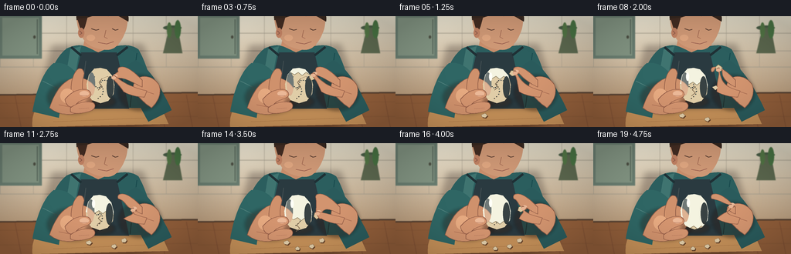
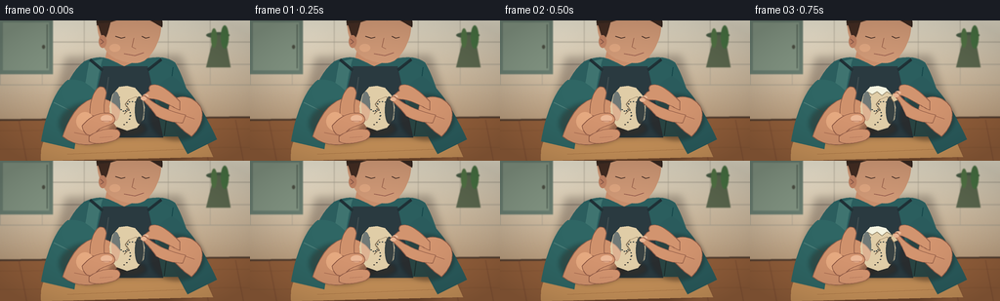

CODING AGENTS AS PIXEL WORLD MODELS
traex/GPT-5.6-Sol · motion_rationality_0011
点击播放 · 原生 RGB 像素
逐轮保存的候选
回放视频、检查图与代码变化。
每份候选均可单独播放。实际图片检查记录在下方工具轨迹中。
候选 01播放与检查图
点击播放 · 原生 RGB 像素


展开代码变化
--- 上一保存版本
+++ 本次保存版本
@@ -0,0 +1,294 @@
+from pathlib import Path
+import math, json
+import numpy as np
+from PIL import Image, ImageDraw, ImageFilter
+import artifact_io
+
+# Procedural, deterministic close-up animation of a person peeling a boiled egg.
+ROOT = Path(__file__).resolve().parent
+SPEC = json.loads((ROOT / 'task_spec.json').read_text())
+W, H, N = SPEC['width'], SPEC['height'], SPEC['frames']
+S = 4
+rng = np.random.default_rng(19)
+
+def sc(v): return int(round(v*S))
+def pts(seq): return [(sc(x), sc(y)) for x,y in seq]
+def ellipse(d, box, fill, outline=None, width=1):
+ d.ellipse(tuple(sc(x) for x in box), fill=fill, outline=outline, width=sc(width) if outline else 1)
+def line(d, seq, fill, width=1, joint='curve'):
+ d.line(pts(seq), fill=fill, width=sc(width), joint=joint)
+def poly(d, seq, fill): d.polygon(pts(seq), fill=fill)
+
+def cubic(p0,p1,p2,p3,n=12):
+ out=[]
+ for t in np.linspace(0,1,n,endpoint=False):
+ u=1-t
+ out.append((u**3*p0[0]+3*u*u*t*p1[0]+3*u*t*t*p2[0]+t**3*p3[0],
+ u**3*p0[1]+3*u*u*t*p1[1]+3*u*t*t*p2[1]+t**3*p3[1]))
+ return out
+
+def bezier_shape(d, segments, fill, outline=None, width=1):
+ # segments: first tuple point, then ('L', p) or ('C', p1,p2,p3)
+ out=[segments[0]]; cur=segments[0]
+ for cmd in segments[1:]:
+ if cmd[0]=='L': out.append(cmd[1]); cur=cmd[1]
+ else:
+ q=cubic(cur,cmd[1],cmd[2],cmd[3],14); out.extend(q[1:]); out.append(cmd[3]); cur=cmd[3]
+ d.polygon(pts(out),fill=fill)
+ if outline: d.line(pts(out+[out[0]]),fill=outline,width=sc(width),joint='curve')
+ return out
+
+def shadow_layer(img, shapes, blur=5, color=(38,23,16,90)):
+ lay=Image.new('RGBA',img.size,(0,0,0,0)); dd=ImageDraw.Draw(lay)
+ for kind, data in shapes:
+ if kind=='ellipse': dd.ellipse(tuple(sc(x) for x in data),fill=color)
+ elif kind=='poly': dd.polygon(pts(data),fill=color)
+ lay=lay.filter(ImageFilter.GaussianBlur(sc(blur)))
+ img.alpha_composite(lay)
+
+def background():
+ # warm photographic kitchen with depth and subtle fine grain
+ yy,xx=np.mgrid[0:H*S,0:W*S]
+ y=yy/(H*S-1); x=xx/(W*S-1)
+ top=np.array([224,218,199.]); bot=np.array([174,139,104.])
+ a=np.clip(y[...,None]*1.08,0,1)
+ arr=top*(1-a)+bot*a
+ glow=np.exp(-((x-.18)**2/(.15**2)+(y-.13)**2/(.28**2)))[...,None]
+ arr += 17*glow
+ noise=rng.normal(0,0.8,(H*S,W*S,1))
+ arr=np.clip(arr+noise,0,255).astype('uint8')
+ im=Image.fromarray(arr,'RGB').convert('RGBA')
+ d=ImageDraw.Draw(im)
+ # backsplash tiles and grout, deliberately soft behind subject
+ for X in [0,43,86,129,172,215,258]: line(d,[(X,0),(X,66)],(162,155,139,105),.55)
+ for Y in [22,45,66]: line(d,[(0,Y),(256,Y)],(162,155,139,120),.65)
+ # upper cabinets / shelves
+ poly(d,[(0,0),(54,0),(54,55),(0,55)],(105,125,112,255))
+ poly(d,[(3,2),(50,2),(50,51),(3,51)],(130,148,130,255))
+ line(d,[(48,4),(48,49)],(78,91,82,180),1)
+ ellipse(d,(43,25,46,29),(75,77,65,220))
+ # out of focus jars and plant at right
+ ellipse(d,(211,12,235,18),(72,92,69,120)); poly(d,[(219,15),(211,48),(236,48),(230,15)],(91,103,78,180))
+ ellipse(d,(216,8,222,28),(82,117,69,180)); ellipse(d,(226,5,234,29),(71,113,66,180))
+ # counter back edge and warm wooden work surface
+ poly(d,[(0,102),(256,99),(256,144),(0,144)],(145,94,58,255))
+ line(d,[(0,102),(256,99)],(76,57,44,110),2)
+ for Y in [113,132]: line(d,[(0,Y),(256,Y-2)],(116,74,47,120),.6)
+ for X in [19,72,205,241]: line(d,[(X,102),(X+8,144)],(111,69,44,85),.5)
+ # soft blur is only for scenery; foreground remains crisp
+ return im.filter(ImageFilter.GaussianBlur(sc(.42)))
+
+BG=background()
+
+# Fixed shell debris placement; pieces become visible as peeling progresses.
+DEBRIS=[(111,128,[(0,0),(5,-2),(8,1),(5,4),(1,3)]),
+ (145,132,[(0,0),(4,-1),(6,2),(3,5),(-1,3)]),
+ (157,125,[(0,0),(5,-2),(7,1),(5,4),(1,4)]),
+ (126,136,[(0,0),(3,-2),(6,0),(5,3),(1,3)])]
+
+def person_and_board(im, f):
+ d=ImageDraw.Draw(im)
+ # cutting board, in sharp foreground
+ shadow_layer(im,[('ellipse',(55,113,211,146))],3,(48,27,15,95)); d=ImageDraw.Draw(im)
+ bezier_shape(d,[(48,118),('C',(54,111),(190,108),(207,115)),('L',(218,140)),('L',(42,144)),('C',(41,134),(43,125),(48,118))],(198,145,89,255))
+ line(d,[(54,119),(204,116)],(238,188,126,150),1)
+ line(d,[(69,137),(188,132)],(156,103,59,130),.55)
+ # person torso behind the hands
+ shadow_layer(im,[('poly',[(67,38),(185,36),(211,119),(48,120)])],4,(41,31,29,75)); d=ImageDraw.Draw(im)
+ # neck
+ bezier_shape(d,[(111,23),('L',(151,22)),('L',(154,49)),('C',(144,59),(116,58),(106,47)),('L',(111,23))],(199,141,107,255))
+ # shirt / apron
+ bezier_shape(d,[(86,42),('C',(103,34),(109,38),(127,47)),('C',(148,37),(166,34),(179,43)),('C',(192,66),(198,94),(203,119)),('L',(55,120)),('C',(61,85),(66,59),(86,42))],(43,94,94,255))
+ # soft shirt highlights/folds
+ bezier_shape(d,[(91,43),('C',(87,66),(83,93),(81,119)),('L',(93,119)),('C',(95,91),(98,62),(105,39))],(63,116,112,110))
+ line(d,[(177,48),(168,118)],(22,71,75,125),1)
+ # dark apron bib and straps
+ poly(d,[(105,47),(151,47),(167,120),(88,120)],(42,58,64,240))
+ line(d,[(92,40),(105,51)],(31,48,53,220),3); line(d,[(165,40),(151,51)],(31,48,53,220),3)
+ line(d,[(111,58),(104,116)],(75,86,88,115),.7)
+ # head, cropped naturally by top frame
+ bezier_shape(d,[(100,-8),('C',(105,-22),(152,-22),(163,-5)),('C',(169,9),(160,32),(148,41)),('C',(139,47),(120,42),(111,34)),('C',(102,24),(97,7),(100,-8))],(205,151,117,255))
+ # hair cap and temple
+ bezier_shape(d,[(99,5),('C',(96,-18),(111,-23),(139,-20)),('C',(159,-18),(168,-5),(166,7)),('C',(154,0),(151,-3),(140,0)),('C',(126,-7),(112,5),(99,5))],(54,39,31,255))
+ poly(d,[(100,3),(106,23),(110,13),(113,2)],(66,44,34,180))
+ # ear, nose, looking-down eye, mouth
+ ellipse(d,(101,15,109,28),(191,128,98,255)); line(d,[(103,19),(106,22),(103,24)],(137,88,73,150),.7)
+ line(d,[(118,16),(124,18),(128,17)],(78,53,42,210),1.1)
+ line(d,[(145,16),(149,18),(153,17)],(78,53,42,210),1.1)
+ line(d,[(137,18),(135,27),(139,29)],(154,98,76,180),.75)
+ line(d,[(127,34),(138,36),(147,33)],(128,70,63,190),.8)
+ # a small warm cheek highlight
+ ellipse(d,(112,24,123,32),(220,164,127,80))
+ # sleeves/forearms behind hands
+ bezier_shape(d,[(69,61),('C',(57,70),(46,97),(42,124)),('L',(76,132)),('C',(79,108),(91,88),(101,76)),('C',(91,65),(83,59),(69,61))],(47,102,100,255))
+ line(d,[(55,84),(75,94)],(77,127,123,100),1)
+ bezier_shape(d,[(176,57),('C',(195,68),(210,96),(222,122)),('L',(192,137)),('C',(178,112),(167,91),(158,77)),('C',(161,67),(167,60),(176,57))],(42,91,92,255))
+ line(d,[(191,81),(177,96)],(74,124,119,110),1)
+
+
+def left_hand_back(im, egg_y):
+ d=ImageDraw.Draw(im)
+ skin=(207,145,108,255); edge=(142,91,70,200); hi=(229,169,128,150)
+ shadow_layer(im,[('ellipse',(61,84,129,127))],2.2,(43,26,20,90)); d=ImageDraw.Draw(im)
+ # wrist and palm cup
+ bezier_shape(d,[(64,119),('C',(70,101),(79,85),(95,80)),('C',(104,77),(119,84),(124,94)),('C',(125,104),(117,117),(105,124)),('C',(91,130),(75,128),(64,119))],skin,edge,.7)
+ # rear index finger rises behind egg
+ bezier_shape(d,[(92,91),('C',(91,81),(96,70),(102,68)),('C',(107,67),(110,71),(108,76)),('L',(103,96)),('Z',(0,0))] if False else [(92,97),('C',(91,84),(96,71),(102,68)),('C',(107,67),(110,72),(108,78)),('C',(106,87),(106,94),(108,100)),('L',(92,97))],skin,edge,.7)
+ line(d,[(76,115),(91,118),(100,115)],(164,103,78,120),.7)
+ ellipse(d,(78,94,96,113),hi)
+
+
+def right_hand_back(im, pinch, phase):
+ d=ImageDraw.Draw(im); skin=(210,148,111,255); edge=(143,91,70,205)
+ px,py=pinch
+ # wrist/palm from right sleeve
+ shadow_layer(im,[('ellipse',(153,76,209,123))],2,(38,23,18,90)); d=ImageDraw.Draw(im)
+ bezier_shape(d,[(196,119),('C',(186,112),(180,106),(176,100)),('C',(171,95),(171,87),(178,81)),('C',(186,75),(199,79),(205,88)),('C',(210,98),(205,111),(196,119))],skin,edge,.7)
+ # index finger: anatomically bends from knuckle toward the pinch point
+ bezier_shape(d,[(184,83),('C',(175,74),(167,67),(160,66)),
+ ('C',(154,65),(151,68),(153,72)),
+ ('C',((px+154)/2,74),((px+154)/2,py-3),(px,py)),
+ ('C',(px+1,py+3),(px+5,py+4),(px+7,py+2)),
+ ('C',(165,80),(176,89),(184,92)),('L',(184,83))],skin,edge,.65)
+ # fingernail near tip
+ bezier_shape(d,[(px+1,py-1),('C',(px+2,py-3),(px+6,py-3),(px+7,py-1)),('C',(px+7,py+1),(px+4,py+2),(px+2,py+1)),('L',(px+1,py-1))],(232,183,151,230))
+ # palm crease
+ line(d,[(181,102),(190,98),(199,101)],(161,100,77,115),.7)
+
+
+def egg_polygon(cx,cy):
+ # slightly asymmetric natural egg silhouette
+ return [(cx,cy-24),(cx-8,cy-23),(cx-15,cy-15),(cx-18,cy-3),(cx-17,cy+9),
+ (cx-11,cy+18),(cx,cy+22),(cx+10,cy+19),(cx+17,cy+10),(cx+18,cy-2),
+ (cx+15,cy-14),(cx+8,cy-22)]
+
+def draw_egg(im, f, cx, cy, peel):
+ # Build shell and peeled white layers clipped exactly to the egg.
+ eggmask=Image.new('L',im.size,0); md=ImageDraw.Draw(eggmask); md.polygon(pts(egg_polygon(cx,cy)),fill=255)
+ # gentle shell gradient
+ layer=Image.new('RGBA',im.size,(0,0,0,0)); ld=ImageDraw.Draw(layer)
+ poly(ld,egg_polygon(cx,cy),(224,205,167,255))
+ # shell mottling
+ for k in range(26):
+ ang=(k*2.399); rad=(k%7)/7
+ x=cx+math.cos(ang)*rad*14; y=cy+math.sin(ang)*rad*19
+ ellipse(ld,(x-.7,y-.5,x+.7,y+.5),(174,148,111,38))
+ # peeled region grows top to bottom with a jagged membrane edge
+ if peel>0:
+ boundary=cy-22+peel*42
+ jag=[(cx-21, boundary-1),(cx-15,boundary+2),(cx-11,boundary-2),(cx-6,boundary+1),
+ (cx-1,boundary-2),(cx+4,boundary+2),(cx+9,boundary-2),(cx+14,boundary+1),(cx+21,boundary-2)]
+ whitepoly=[(cx-23,cy-27),(cx+23,cy-27)]+list(reversed(jag))
+ ld.polygon(pts(whitepoly),fill=(244,243,224,255))
+ # thin darker inner membrane along peel frontier
+ ld.line(pts(jag),fill=(188,166,126,190),width=sc(.65),joint='curve')
+ # isolated missing side flakes make peeling read clearly
+ if peel>.32: ellipse(ld,(cx+11,cy-6,cx+18,cy+3),(244,243,225,255))
+ if peel>.56: ellipse(ld,(cx-17,cy+2,cx-9,cy+10),(244,243,225,255))
+ # shadows/highlights molded to surface
+ ellipse(ld,(cx-16,cy-18,cx-7,cy+12),(255,252,231,80))
+ ellipse(ld,(cx+8,cy-13,cx+17,cy+15),(139,112,82,35))
+ layer.putalpha(Image.composite(layer.getchannel('A'),Image.new('L',im.size,0),eggmask))
+ # cast shadow and composite
+ shadow_layer(im,[('ellipse',(cx-18,cy+12,cx+20,cy+28))],2,(50,31,20,100))
+ im.alpha_composite(layer)
+ d=ImageDraw.Draw(im)
+ # cracks in shell only ahead of frontier
+ if peel < .84:
+ by=cy-22+peel*42
+ crack=[(cx+2,max(cy-10,by+4)),(cx-2,max(cy-5,by+8)),(cx+2,max(cy,by+12)),(cx-3,max(cy+5,by+16))]
+ line(d,crack,(129,108,82,175),.65)
+ if peel<.25:
+ line(d,[(cx+2,cy-10),(cx+9,cy-13),(cx+13,cy-10)],(129,108,82,155),.55)
+ # glossy white highlight appears after peel
+ if peel>.22:
+ ellipse(d,(cx-10,cy-18,cx-6,cy-7),(255,255,247,165))
+ return cy-22+peel*42
+
+
+def front_fingers(im, f, cx, cy, pinch, peel):
+ d=ImageDraw.Draw(im); skin=(211,148,111,255); edge=(145,91,70,210)
+ # left thumb laid across lower egg, slight reposition upward late in action
+ ty=cy+10-(3 if peel>.65 else 0)
+ bezier_shape(d,[(84,108),('C',(91,99),(101,94),(111,95)),('C',(116,96),(119,100),(117,104)),
+ ('C',(113,108),(103,108),(98,115)),('C',(93,121),(85,117),(84,108))],skin,edge,.7)
+ ellipse(d,(103,97,115,104),(235,184,151,220)); line(d,[(104,103),(113,103)],(178,116,91,120),.5)
+ # two curled support fingers at bottom
+ bezier_shape(d,[(91,119),('C',(100,112),(111,110),(120,112)),('C',(125,115),(123,121),(117,123)),
+ ('C',(108,126),(97,128),(91,124)),('L',(91,119))],skin,edge,.7)
+ line(d,[(102,120),(115,119)],(164,103,79,120),.55)
+ # right thumb opposes the index at pinch; realistic short arc from palm
+ px,py=pinch
+ bezier_shape(d,[(187,105),('C',(177,105),(167,102),(160,98)),
+ ('C',((px+160)/2,py+9),(px+5,py+8),(px+1,py+3)),
+ ('C',(px-1,py+1),(px,py-1),(px+3,py-1)),
+ ('C',(164,91),(179,94),(190,97)),('L',(187,105))],skin,edge,.65)
+ ellipse(d,(px-1,py,px+5,py+4),(232,180,147,180))
+
+
+def shell_fragment(im, f, pinch, peel):
+ # a visible shell chip between finger and thumb during pull phases
+ d=ImageDraw.Draw(im); px,py=pinch
+ if 3 <= f <= 9 or 12 <= f <= 17:
+ rot=(f*0.55)
+ rr=[(math.cos(rot)*a-math.sin(rot)*b+px+2, math.sin(rot)*a+math.cos(rot)*b+py+2)
+ for a,b in [(-1,-3),(5,-2),(7,2),(3,5),(-2,3)]]
+ poly(d,rr,(221,200,160,255)); line(d,rr+[rr[0]],(139,112,79,210),.55)
+ line(d,[(px+1,py+1),(px+5,py+2)],(247,235,205,180),.55)
+
+
+def render(f):
+ im=BG.copy()
+ person_and_board(im,f)
+ # Stage motion: two deliberate peel pulls with a brief return to the egg.
+ if f <= 2:
+ peel=0.0
+ pinch=(145-f*.6,78+f*.8)
+ elif f <= 8:
+ q=(f-2)/6
+ peel=.08+.36*q
+ pinch=(145+15*q,76-8*q)
+ elif f <= 11:
+ q=(f-8)/3
+ peel=.44+.05*q
+ pinch=(160+10*q,68+17*q)
+ elif f <= 16:
+ q=(f-11)/5
+ peel=.49+.35*q
+ # hand returns to edge then draws a larger piece rightward
+ pinch=(157-10*min(q/.38,1)+16*max((q-.38)/.62,0), 84+9*min(q/.38,1)-10*max((q-.38)/.62,0))
+ else:
+ q=(f-16)/3
+ peel=.84+.15*q
+ pinch=(163+13*q,73+7*q)
+ # tiny natural lift/rotation of egg over time
+ cx=130 + int(round(math.sin(f*.45)*.7))
+ cy=91 - (1 if f>15 else 0)
+ left_hand_back(im,cy)
+ right_hand_back(im,pinch,0)
+ boundary=draw_egg(im,f,cx,cy,min(peel,.99))
+ shell_fragment(im,f,pinch,peel)
+ front_fingers(im,f,cx,cy,pinch,peel)
+ d=ImageDraw.Draw(im)
+ # accumulating discarded shell pieces on cutting board with crisp shadows
+ visible=max(0,min(4,(f-4)//3+1)) if f>=4 else 0
+ for i in range(visible):
+ x,y,shape=DEBRIS[i]
+ poly(d,[(x+a+1,y+b+1) for a,b in shape],(99,62,38,80))
+ poly(d,[(x+a,y+b) for a,b in shape],(224,204,168,255))
+ line(d,[(x+a,y+b) for a,b in shape]+[(x+shape[0][0],y+shape[0][1])],(144,116,83,190),.45)
+ # one falling flake in the middle of each peel pull conveys cause/effect
+ if f in (8,15):
+ fx=154 if f==8 else 148; fy=92 if f==8 else 105
+ poly(d,[(fx,fy),(fx+5,fy-2),(fx+7,fy+1),(fx+4,fy+4)],(225,205,167,255))
+ # gentle overall photographic vignette
+ arr=np.asarray(im.convert('RGB')).astype(np.float32)
+ yy,xx=np.mgrid[0:H*S,0:W*S]; nx=(xx-W*S/2)/(W*S/2); ny=(yy-H*S/2)/(H*S/2)
+ vig=np.clip(1-.12*np.maximum(0,nx*nx+ny*ny-.25),.84,1)[...,None]
+ arr=np.clip(arr*vig,0,255).astype(np.uint8)
+ out=Image.fromarray(arr).resize((W,H),Image.Resampling.LANCZOS)
+ return np.asarray(out,dtype=np.uint8)
+
+frames=np.stack([render(i) for i in range(N)],axis=0)
+artifact_io.save(frames, ROOT)
+print(f'saved {frames.shape} RGB animation to {ROOT}')
可观测工具轨迹
实际执行的命令与返回图片。
命令 1exit 0
/bin/bash -lc "cat prompt.txt && printf '\\n---RULES---\\n' && cat GENERATION_RULES.md && printf '\\n---SPEC---\\n' && cat task_spec.json"
命令 2exit 0
/bin/bash -lc "find . -maxdepth 2 -type f -printf '%p %s bytes\\n' | sort"
命令 3exit 0
/bin/bash -lc "sed -n '1,240p' artifact_io.py"
命令 4exit 1
/bin/bash -lc "cat > generate.py <<'PY'
from pathlib import Path
import math, json
import numpy as np
from PIL import Image, ImageDraw, ImageFilter
import artifact_io
# Procedural, deterministic close-up animation of a person peeling a boiled egg.
ROOT = Path(__file__).resolve().parent
SPEC = json.loads((ROOT / 'task_spec.json').read_text())
W, H, N = SPEC['width'], SPEC['height'], SPEC['frames']
S = 4
rng = np.random.default_rng(19)
def sc(v): return int(round(v*S))
def pts(seq): return [(sc(x), sc(y)) for x,y in seq]
def ellipse(d, box, fill, outline=None, width=1):
d.ellipse(tuple(sc(x) for x in box), fill=fill, outline=outline, width=sc(width) if outline else 1)
def line(d, seq, fill, width=1, joint='curve'):
d.line(pts(seq), fill=fill, width=sc(width), joint=joint)
def poly(d, seq, fill): d.polygon(pts(seq), fill=fill)
def cubic(p0,p1,p2,p3,n=12):
out=[]
for t in np.linspace(0,1,n,endpoint=False):
u=1-t
out.append((u**3*p0[0]+3*u*u*t*p1[0]+3*u*t*t*p2[0]+t**3*p3[0],
u**3*p0[1]+3*u*u*t*p1[1]+3*u*t*t*p2[1]+t**3*p3[1]))
return out
def bezier_shape(d, segments, fill, outline=None, width=1):
# segments: first tuple point, then ('L', p) or ('C', p1,p2,p3)
out=[segments[0]]; cur=segments[0]
for cmd in segments[1:]:
if cmd[0]=='L': out.append(cmd[1]); cur=cmd[1]
else:
q=cubic(cur,cmd[1],cmd[2],cmd[3],14); out.extend(q[1:]); out.append(cmd[3]); cur=cmd[3]
d.polygon(pts(out),fill=fill)
if outline: d.line(pts(out+[out[0]]),fill=outline,width=sc(width),joint='curve')
return out
def shadow_layer(img, shapes, blur=5, color=(38,23,16,90)):
lay=Image.new('RGBA',img.size,(0,0,0,0)); dd=ImageDraw.Draw(lay)
for kind, data in shapes:
if kind=='ellipse': dd.ellipse(tuple(sc(x) for x in data),fill=color)
elif kind=='poly': dd.polygon(pts(data),fill=color)
lay=lay.filter(ImageFilter.GaussianBlur(sc(blur)))
img.alpha_composite(lay)
def background():
# warm photographic kitchen with depth and subtle fine grain
yy,xx=np.mgrid[0:H*S,0:W*S]
y=yy/(H*S-1); x=xx/(W*S-1)
top=np.array([224,218,199.]); bot=np.array([174,139,104.])
a=np.clip(y[...,None]*1.08,0,1)
arr=top*(1-a)+bot*a
glow=np.exp(-((x-.18)**2/(.15**2)+(y-.13)**2/(.28**2)))[...,None]
arr += 17*glow
noise=rng.normal(0,0.8,(H*S,W*S,1))
arr=np.clip(arr+noise,0,255).astype('uint8')
im=Image.fromarray(arr,'RGB').convert('RGBA')
d=ImageDraw.Draw(im)
# backsplash tiles and grout, deliberately soft behind subject
for X in [0,43,86,129,172,215,258]: line(d,[(X,0),(X,66)],(162,155,139,105),.55)
for Y in [22,45,66]: line(d,[(0,Y),(256,Y)],(162,155,139,120),.65)
# upper cabinets / shelves
poly(d,[(0,0),(54,0),(54,55),(0,55)],(105,125,112,255))
poly(d,[(3,2),(50,2),(50,51),(3,51)],(130,148,130,255))
line(d,[(48,4),(48,49)],(78,91,82,180),1)
ellipse(d,(43,25,46,29),(75,77,65,220))
# out of focus jars and plant at right
ellipse(d,(211,12,235,18),(72,92,69,120)); poly(d,[(219,15),(211,48),(236,48),(230,15)],(91,103,78,180))
ellipse(d,(216,8,222,28),(82,117,69,180)); ellipse(d,(226,5,234,29),(71,113,66,180))
# counter back edge and warm wooden work surface
poly(d,[(0,102),(256,99),(256,144),(0,144)],(145,94,58,255))
line(d,[(0,102),(256,99)],(76,57,44,110),2)
for Y in [113,132]: line(d,[(0,Y),(256,Y-2)],(116,74,47,120),.6)
for X in [19,72,205,241]: line(d,[(X,102),(X+8,144)],(111,69,44,85),.5)
# soft blur is only for scenery; foreground remains crisp
return im.filter(ImageFilter.GaussianBlur(sc(.42)))
BG=background()
# Fixed shell debris placement; pieces become visible as peeling progresses.
DEBRIS=[(111,128,[(0,0),(5,-2),(8,1),(5,4),(1,3)]),
(145,132,[(0,0),(4,-1),(6,2),(3,5),(-1,3)]),
(157,125,[(0,0),(5,-2),(7,1),(5,4),(1,4)]),
(126,136,[(0,0),(3,-2),(6,0),(5,3),(1,3)])]
def person_and_board(im, f):
d=ImageDraw.Draw(im)
# cutting board, in sharp foreground
shadow_layer(im,[('ellipse',(55,113,211,146))],3,(48,27,15,95)); d=ImageDraw.Draw(im)
bezier_shape(d,[(48,118),('C',(54,111),(190,108),(207,115)),('L',(218,140)),('L',(42,144)),('C',(41,134),(43,125),(48,118))],(198,145,89,255))
line(d,[(54,119),(204,116)],(238,188,126,150),1)
line(d,[(69,137),(188,132)],(156,103,59,130),.55)
# person torso behind the hands
shadow_layer(im,[('poly',[(67,38),(185,36),(211,119),(48,120)])],4,(41,31,29,75)); d=ImageDraw.Draw(im)
# neck
bezier_shape(d,[(111,23),('L',(151,22)),('L',(154,49)),('C',(144,59),(116,58),(106,47)),('L',(111,23))],(199,141,107,255))
# shirt / apron
bezier_shape(d,[(86,42),('C',(103,34),(109,38),(127,47)),('C',(148,37),(166,34),(179,43)),('C',(192,66),(198,94),(203,119)),('L',(55,120)),('C',(61,85),(66,59),(86,42))],(43,94,94,255))
# soft shirt highlights/folds
bezier_shape(d,[(91,43),('C',(87,66),(83,93),(81,119)),('L',(93,119)),('C',(95,91),(98,62),(105,39))],(63,116,112,110))
line(d,[(177,48),(168,118)],(22,71,75,125),1)
# dark apron bib and straps
poly(d,[(105,47),(151,47),(167,120),(88,120)],(42,58,64,240))
line(d,[(92,40),(105,51)],(31,48,53,220),3); line(d,[(165,40),(151,51)],(31,48,53,220),3)
line(d,[(111,58),(104,116)],(75,86,88,115),.7)
# head, cropped naturally by top frame
bezier_shape(d,[(100,-8),('C',(105,-22),(152,-22),(163,-5)),('C',(169,9),(160,32),(148,41)),('C',(139,47),(120,42),(111,34)),('C',(102,24),(97,7),(100,-8))],(205,151,117,255))
# hair cap and temple
bezier_shape(d,[(99,5),('C',(96,-18),(111,-23),(139,-20)),('C',(159,-18),(168,-5),(166,7)),('C',(154,0),(151,-3),(140,0)),('C',(126,-7),(112,5),(99,5))],(54,39,31,255))
poly(d,[(100,3),(106,23),(110,13),(113,2)],(66,44,34,180))
# ear, nose, looking-down eye, mouth
ellipse(d,(101,15,109,28),(191,128,98,255)); line(d,[(103,19),(106,22),(103,24)],(137,88,73,150),.7)
line(d,[(118,16),(124,18),(128,17)],(78,53,42,210),1.1)
line(d,[(145,16),(149,18),(153,17)],(78,53,42,210),1.1)
line(d,[(137,18),(135,27),(139,29)],(154,98,76,180),.75)
line(d,[(127,34),(138,36),(147,33)],(128,70,63,190),.8)
# a small warm cheek highlight
ellipse(d,(112,24,123,32),(220,164,127,80))
# sleeves/forearms behind hands
bezier_shape(d,[(69,61),('C',(57,70),(46,97),(42,124)),('L',(76,132)),('C',(79,108),(91,88),(101,76)),('C',(91,65),(83,59),(69,61))],(47,102,100,255))
line(d,[(55,84),(75,94)],(77,127,123,100),1)
bezier_shape(d,[(176,57),('C',(195,68),(210,96),(222,122)),('L',(192,137)),('C',(178,112),(167,91),(158,77)),('C',(161,67),(167,60),(176,57))],(42,91,92,255))
line(d,[(191,81),(177,96)],(74,124,119,110),1)
def left_hand_back(im, egg_y):
d=ImageDraw.Draw(im)
skin=(207,145,108,255); edge=(142,91,70,200); hi=(229,169,128,150)
shadow_layer(im,[('ellipse',(61,84,129,127))],2.2,(43,26,20,90)); d=ImageDraw.Draw(im)
# wrist and palm cup
bezier_shape(d,[(64,119),('C',(70,101),(79,85),(95,80)),('C',(104,77),(119,84),(124,94)),('C',(125,104),(117,117),(105,124)),('C',(91,130),(75,128),(64,119))],skin,edge,.7)
# rear index finger rises behind egg
bezier_shape(d,[(92,91),('C',(91,81),(96,70),(102,68)),('C',(107,67),(110,71),(108,76)),('L',(103,96)),('Z',(0,0))] if False else [(92,97),('C',(91,84),(96,71),(102,68)),('C',(107,67),(110,72),(108,78)),('C',(106,87),(106,94),(108,100)),('L',(92,97))],skin,edge,.7)
line(d,[(76,115),(91,118),(100,115)],(164,103,78,120),.7)
ellipse(d,(78,94,96,113),hi)
def right_hand_back(im, pinch, phase):
d=ImageDraw.Draw(im); skin=(210,148,111,255); edge=(143,91,70,205)
px,py=pinch
# wrist/palm from right sleeve
shadow_layer(im,[('ellipse',(153,76,209,123))],2,(38,23,18,90)); d=ImageDraw.Draw(im)
bezier_shape(d,[(196,119),('C',(186,112),(180,106),(176,100)),('C',(171,95),(171,87),(178,81)),('C',(186,75),(199,79),(205,88)),('C',(210,98),(205,111),(196,119))],skin,edge,.7)
# index finger: anatomically bends from knuckle toward the pinch point
bezier_shape(d,[(184,83),('C',(175,74),(167,67),(160,66)),
('C',(154,65),(151,68),(153,72)),
('C',((px+154)/2,74,(px+154)/2,py-3,px,py)),
('C',(px+1,py+3,px+5,py+4,px+7,py+2)),
('C',(165,80,176,89,184,92)),('L',(184,83))],skin,edge,.65)
# fingernail near tip
bezier_shape(d,[(px+1,py-1),('C',(px+2,py-3),(px+6,py-3),(px+7,py-1)),('C',(px+7,py+1),(px+4,py+2),(px+2,py+1)),('L',(px+1,py-1))],(232,183,151,230))
# palm crease
line(d,[(181,102),(190,98),(199,101)],(161,100,77,115),.7)
def egg_polygon(cx,cy):
# slightly asymmetric natural egg silhouette
return [(cx,cy-24),(cx-8,cy-23),(cx-15,cy-15),(cx-18,cy-3),(cx-17,cy+9),
(cx-11,cy+18),(cx,cy+22),(cx+10,cy+19),(cx+17,cy+10),(cx+18,cy-2),
(cx+15,cy-14),(cx+8,cy-22)]
def draw_egg(im, f, cx, cy, peel):
# Build shell and peeled white layers clipped exactly to the egg.
eggmask=Image.new('L',im.size,0); md=ImageDraw.Draw(eggmask); md.polygon(pts(egg_polygon(cx,cy)),fill=255)
# gentle shell gradient
layer=Image.new('RGBA',im.size,(0,0,0,0)); ld=ImageDraw.Draw(layer)
poly(ld,egg_polygon(cx,cy),(224,205,167,255))
# shell mottling
for k in range(26):
ang=(k*2.399); rad=(k%7)/7
x=cx+math.cos(ang)*rad*14; y=cy+math.sin(ang)*rad*19
ellipse(ld,(x-.7,y-.5,x+.7,y+.5),(174,148,111,38))
# peeled region grows top to bottom with a jagged membrane edge
if peel>0:
boundary=cy-22+peel*42
jag=[(cx-21, boundary-1),(cx-15,boundary+2),(cx-11,boundary-2),(cx-6,boundary+1),
(cx-1,boundary-2),(cx+4,boundary+2),(cx+9,boundary-2),(cx+14,boundary+1),(cx+21,boundary-2)]
whitepoly=[(cx-23,cy-27),(cx+23,cy-27)]+list(reversed(jag))
ld.polygon(pts(whitepoly),fill=(244,243,224,255))
# thin darker inner membrane along peel frontier
ld.line(pts(jag),fill=(188,166,126,190),width=sc(.65),joint='curve')
# isolated missing side flakes make peeling read clearly
if peel>.32: ellipse(ld,(cx+11,cy-6,cx+18,cy+3),(244,243,225,255))
if peel>.56: ellipse(ld,(cx-17,cy+2,cx-9,cy+10),(244,243,225,255))
# shadows/highlights molded to surface
ellipse(ld,(cx-16,cy-18,cx-7,cy+12),(255,252,231,80))
ellipse(ld,(cx+8,cy-13,cx+17,cy+15),(139,112,82,35))
layer.putalpha(Image.composite(layer.getchannel('A'),Image.new('L',im.size,0),eggmask))
# cast shadow and composite
shadow_layer(im,[('ellipse',(cx-18,cy+12,cx+20,cy+28))],2,(50,31,20,100))
im.alpha_composite(layer)
d=ImageDraw.Draw(im)
# cracks in shell only ahead of frontier
if peel < .84:
by=cy-22+peel*42
crack=[(cx+2,max(cy-10,by+4)),(cx-2,max(cy-5,by+8)),(cx+2,max(cy,by+12)),(cx-3,max(cy+5,by+16))]
line(d,crack,(129,108,82,175),.65)
if peel<.25:
line(d,[(cx+2,cy-10),(cx+9,cy-13),(cx+13,cy-10)],(129,108,82,155),.55)
# glossy white highlight appears after peel
if peel>.22:
ellipse(d,(cx-10,cy-18,cx-6,cy-7),(255,255,247,165))
return cy-22+peel*42
def front_fingers(im, f, cx, cy, pinch, peel):
d=ImageDraw.Draw(im); skin=(211,148,111,255); edge=(145,91,70,210)
# left thumb laid across lower egg, slight reposition upward late in action
ty=cy+10-(3 if peel>.65 else 0)
bezier_shape(d,[(84,108),('C',(91,99),(101,94),(111,95)),('C',(116,96),(119,100),(117,104)),
('C',(113,108),(103,108),(98,115)),('C',(93,121),(85,117),(84,108))],skin,edge,.7)
ellipse(d,(103,97,115,104),(235,184,151,220)); line(d,[(104,103),(113,103)],(178,116,91,120),.5)
# two curled support fingers at bottom
bezier_shape(d,[(91,119),('C',(100,112),(111,110),(120,112)),('C',(125,115),(123,121),(117,123)),
('C',(108,126),(97,128),(91,124)),('L',(91,119))],skin,edge,.7)
line(d,[(102,120),(115,119)],(164,103,79,120),.55)
# right thumb opposes the index at pinch; realistic short arc from palm
px,py=pinch
bezier_shape(d,[(187,105),('C',(177,105),(167,102),(160,98)),
('C',((px+160)/2,py+9,px+5,py+8,px+1,py+3)),
('C',(px-1,py+1,px,py-1,px+3,py-1)),
('C',(164,91,179,94,190,97)),('L',(187,105))],skin,edge,.65)
ellipse(d,(px-1,py,px+5,py+4),(232,180,147,180))
def shell_fragment(im, f, pinch, peel):
# a visible shell chip between finger and thumb during pull phases
d=ImageDraw.Draw(im); px,py=pinch
if 3 <= f <= 9 or 12 <= f <= 17:
rot=(f*0.55)
rr=[(math.cos(rot)*a-math.sin(rot)*b+px+2, math.sin(rot)*a+math.cos(rot)*b+py+2)
for a,b in [(-1,-3),(5,-2),(7,2),(3,5),(-2,3)]]
poly(d,rr,(221,200,160,255)); line(d,rr+[rr[0]],(139,112,79,210),.55)
line(d,[(px+1,py+1),(px+5,py+2)],(247,235,205,180),.55)
def render(f):
im=BG.copy()
person_and_board(im,f)
# Stage motion: two deliberate peel pulls with a brief return to the egg.
if f <= 2:
peel=0.0
pinch=(145-f*.6,78+f*.8)
elif f <= 8:
q=(f-2)/6
peel=.08+.36*q
pinch=(145+15*q,76-8*q)
elif f <= 11:
q=(f-8)/3
peel=.44+.05*q
pinch=(160+10*q,68+17*q)
elif f <= 16:
q=(f-11)/5
peel=.49+.35*q
# hand returns to edge then draws a larger piece rightward
pinch=(157-10*min(q/.38,1)+16*max((q-.38)/.62,0), 84+9*min(q/.38,1)-10*max((q-.38)/.62,0))
else:
q=(f-16)/3
peel=.84+.15*q
pinch=(163+13*q,73+7*q)
# tiny natural lift/rotation of egg over time
cx=130 + int(round(math.sin(f*.45)*.7))
cy=91 - (1 if f>15 else 0)
left_hand_back(im,cy)
right_hand_back(im,pinch,0)
boundary=draw_egg(im,f,cx,cy,min(peel,.99))
shell_fragment(im,f,pinch,peel)
front_fingers(im,f,cx,cy,pinch,peel)
d=ImageDraw.Draw(im)
# accumulating discarded shell pieces on cutting board with crisp shadows
visible=max(0,min(4,(f-4)//3+1)) if f>=4 else 0
for i in range(visible):
x,y,shape=DEBRIS[i]
poly(d,[(x+a+1,y+b+1) for a,b in shape],(99,62,38,80))
poly(d,[(x+a,y+b) for a,b in shape],(224,204,168,255))
line(d,[(x+a,y+b) for a,b in shape]+[(x+shape[0][0],y+shape[0][1])],(144,116,83,190),.45)
# one falling flake in the middle of each peel pull conveys cause/effect
if f in (8,15):
fx=154 if f==8 else 148; fy=92 if f==8 else 105
poly(d,[(fx,fy),(fx+5,fy-2),(fx+7,fy+1),(fx+4,fy+4)],(225,205,167,255))
# gentle overall photographic vignette
arr=np.asarray(im.convert('RGB')).astype(np.float32)
yy,xx=np.mgrid[0:H*S,0:W*S]; nx=(xx-W*S/2)/(W*S/2); ny=(yy-H*S/2)/(H*S/2)
vig=np.clip(1-.12*np.maximum(0,nx*nx+ny*ny-.25),.84,1)[...,None]
arr=np.clip(arr*vig,0,255).astype(np.uint8)
out=Image.fromarray(arr).resize((W,H),Image.Resampling.LANCZOS)
return np.asarray(out,dtype=np.uint8)
frames=np.stack([render(i) for i in range(N)],axis=0)
artifact_io.save(frames, ROOT)
print(f'saved {frames.shape} RGB animation to {ROOT}')
PY
python generate.py"命令 5exit 0
/bin/bash -lc "nl -ba generate.py | sed -n '135,235p'"
命令 6exit 0
/bin/bash -lc 'python generate.py'
命令 7exit 0
/bin/bash -lc 'command -v viu || command -v chafa || command -v jp2 || command -v img2txt || true'
命令 8exit 0
/bin/bash -lc "python - <<'PY'
import numpy as np
from pathlib import Path
from PIL import Image
p=np.load('pixels.npz')['pixels']
print('pixels',p.shape,p.dtype,'frames unique deltas', [int(np.sum(p[:,:,i]"'!=p[:,:,i-1])) for i in range(1,p.shape[2])])
for f in ['"'frames/00.png','frames/08.png','frames/15.png','frames/19.png','inspection.png','index.html']:
q=Path(f); print(f,q.stat().st_size)
# Verify all frame dimensions/modes and generate a tiny textual color summary.
for i in [0,8,15,19]:
a=np.asarray(Image.open(f'frames/{i:02}.png'))
print(i,a.shape,a.mean((0,1)).round(1),len(np.unique(a.reshape(-1,3),axis=0)))
PY"保存候选 1 份；完成命令 8 次；可验证图片返回 0 张。原始 API 响应与完整日志保留在本地。